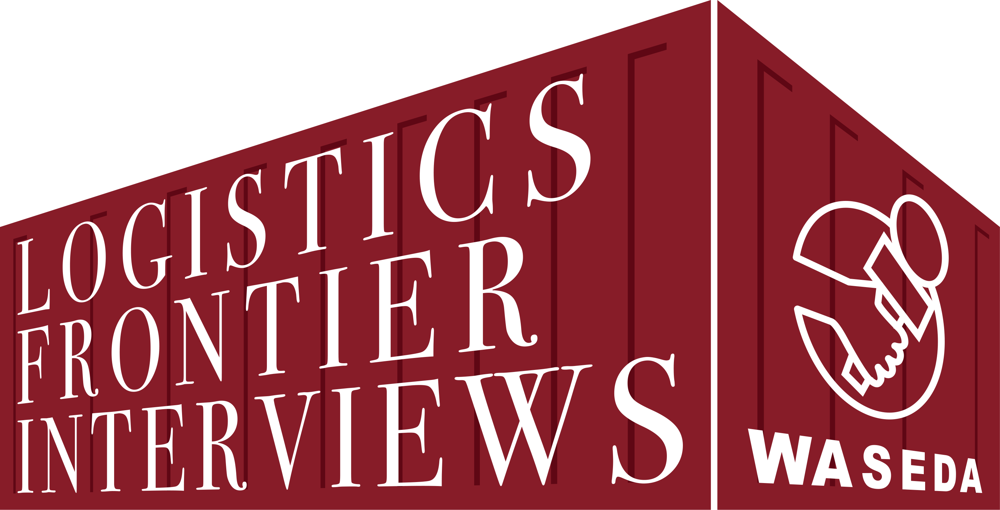
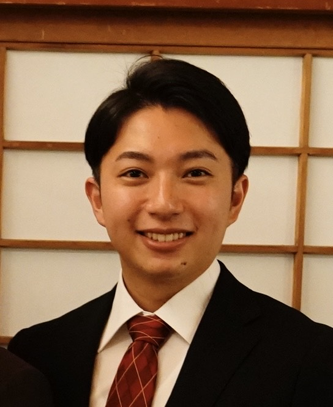

運営者プロフィール
プロジェクト概要

蓮池研究室 SC情報発信プロジェクト
Supply Chain Research Lab Project
私たちは、早稲田大学・蓮池研究室で数理最適化やシミュレーションを用いて物流研究を行っているメンバーと、共同研究先である鉄鋼系運送会社（メタル便）の有志メンバーで構成されています。本プロジェクトでは、日本物流の発展に向けて、SC（サプライチェーン：Supply Chain）の現場の実態や、最前線で物流を支えてきた先人たちの貴重な「知」と「経験」を後世（次代）へ継承・発信していくことを目的としています。この情報発信活動を通じて、学生自身にとっても実務的な知見や多様な視点を獲得し、深い学びを得るための自主プロジェクトとして活動しています。
単に研究室に籠もるだけでなく、現場調査（フィールドワーク）を通じて実社会の物流効率化・2024年問題をはじめとする社会的課題にコミットすることを目指しています。
アドバイザー

梶 大吉
1979年慶應義塾大学商学部卒/総合トラック（株）代表取締役/（株）メタル便代表取締役
1979年に慶応義塾大学商学部を卒業後、運送事業に携わり、総合トラック株式会社および株式会社メタル便の代表取締役に就任。
2000年には日本初となる鋼材の混載ビジネスを「メタル便」として千葉県浦安市にて立ち上げました。現在は全国の物流会社8社のネットワークにより、長尺・異形状貨物の全国への混載輸送を展開しています。
2016年にはメタル便グループとして、事業継続（BCP）における優れた取り組みが評価され、「BCAOアワード特別賞」および「最優秀実践賞」をダブル受賞しました。
2021年、自身の病気療養を機に経営執行を次世代へ委譲。現在は、物流業界の発展と次世代の人材育成、さらには産学連携活動の推進に注力しています。
- 総合トラック株式会社 代表取締役
- 株式会社メタル便 代表取締役
- 2026年〜：慶應義塾大学 高度物流人材育成塾 理事
- 2026年〜：早稲田大学 蓮池研究室 共同研究中
活動学生

長野 恵治
早稲田大学院 創造理工学研究科 経営システム工学専攻 修士2年
学部生時代はスポーツメディアの運営に携わり、大学ラグビー部への現地取材や試合記事執筆、プロジェクト管理などの発信活動を精力的に行ってきました。
研究活動では、物流の「2024年問題」をきっかけに日本のサプライチェーンに興味を抱き、卒業研究では卸売市場での現地調査（フィールドワーク）を行い、プログラミングを用いた荷待ち時間削減のシミュレーションを構築し、国際学会での発表を経験。現在は大学院にて、災害時の道路寸断リスクを考慮した強靭な「拠点配置計画」の数理最適化モデルを研究しています。
本プロジェクトを通じて、今後も物流に携わる身として、実務家の方々の視点や意見から学びを得て、物流業界に影響を与えることができる人材を目指しています。
- 学部研究：トラックの待機時間削減に向けた荷役・バース運用のシミュレーション
- 災害時のルーティング最適化
- 拠点最適化モデルの構築
安井 佑夢
早稲田大学院 創造理工学研究科 経営システム工学専攻 修士2年
学部生時代は早稲田大学理工展連絡会の財務局長兼会計として学園祭「理工展」の運営に携わりました。
研究活動では2024年問題に代表される物流課題の解決として移動販売に着目し、各地点の需要が不確実な配送計画問題ついて輸送コストと需要量充足のトレードオフを満たすモデルを提案し、国際学会で発表を行いました。修士では回収も含めた配送計画問題についての研究を行う予定です。
本プロジェクトを通じて、今後研究者としてのキャリアを歩むうえで、業界は違えど現場に寄り添った研究を行うための視点や、社会人として重要となる視座や考え方を身につけたいと考えています。
- 学部研究：巡回セールスマン問題の新たな定式化の提案
- 確率を用いた意思決定支援
- 配送計画問題の最適化
井上 聡太
早稲田大学院 創造理工学研究科 経営システム工学専攻 修士1年
学部生時代は、他学部にて計量経済学を学びました。その中で、社会全体を俯瞰するだけでなく、より現場に根差した視点から社会課題に向き合いたいと考え、大学院から経営システム工学を専攻しています。
現在はエージェントベースモデルを用いた社会シミュレーションを学んでおり、京都市におけるオーバーツーリズム問題について研究を行う予定です。
物流業界については、不安定な社会情勢や規制の強化により、数理的アプローチの必要性が高まっていると感じています。本プロジェクトでは、物流の現場から見える課題を学び、物流業界への理解と関心を深め、自身が提供できる価値について考えていきたいです。
- エージェントベースモデルを用いた社会シミュレーション
- 京都市におけるオーバーツーリズム問題の分析
- 物流課題に対する数理的アプローチ
上村 まどか
早稲田大学 創造理工学部 経営システム工学科 4年
学部3年生の時に参加した製薬企業のインターンシップにて、コロナ禍でも医療製品の供給を維持するサプライチェーンの工夫を知ったことをきっかけに、サプライチェーンマネジメントに興味を持ちました。将来は、災害下でも食品や医療製品などの生活必需品を安定的に供給できる仕組みづくりに携わりたいと考えています。
現在は卒業論文として、菓子販売における需要予測と最適発注量の決定手法を研究しています。サプライチェーンの一部分である在庫管理を学ぶ中で、その過程にある物流や倉庫管理の実態についても視野を広げていきたいと考えております。
本プロジェクトを通して、現場の実情に触れながら、サプライチェーンへの理解を深めていきたいです。
- 物流現場の課題分析
- システム工学の社会応用
谷口 結
早稲田大学 創造理工学部 経営システム工学科 4年
学部で物流システムや倉庫レイアウト設計について学ぶ中で、物流は企業活動を支える重要な社会基盤であり、多くの課題を抱える分野であることを実感しました。
本活動を通じて、企業が直面する物流課題への理解を深めるとともに、多角的な視点と実践的な思考力を身につけ、課題解決に主体的に取り組める力を養いたいと考えています。
- シミュレーションを用いた大規模施設の混雑緩和
- 倉庫レイアウト設計・最適化
- 物流システムの最適化